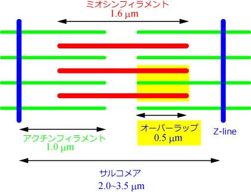
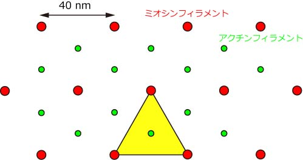
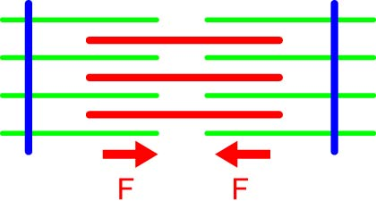

では次に，ミオシン分子の発生する平均の力を求めてみましょう．
ここでは，ある仮定の下に計算しています，それは，
すべてのミオシン分子は独立に働く
すべてのミオシン分子は等しく働く
と言うものです．
これらの仮定がないと，計算できません．
実際にこの仮定は成り立つか？と言われてもそれを証明する確実な実験結果はありません．
ですので，以下の計算は，あくまでもこれら仮定の下ですので，それをお忘れないように．
まず，もう一度サルコメアの構造を見てみましょう．

ここで，一本のアクチンフィラメントに注目してみます．
ここでは，黄色いエリアにあるアクチンフィラメントです．
これを断面で見ると，

このようになります．
さて，このアクチンフィラメントにはいくつのミオシン分子が関与しているのでしょう？
ここでは計算上，オーバーラップの長さを，０．５ミクロンとしておきましょう．
また，筋繊維の実験を元に，断面積が１ｃｍ２あたり，
４ｋｇ重 ＝ ４０N
の力を発生するとしましょう．
さて，先に述べたように，この黄色の正三角形の一辺の長さは，40nm，つまり面積は，
２０nm×２０√３nm÷２×２＝４００√３nm2，となります．
１ｃｍ２＝１０１４nm2，なので，
１０１４nm2÷４００√３nm2÷＝１．４×１０１１本
のアクチンフィラメントが１ｃｍ２あたりに含まれていることになります．
さて，次にこの一本のアクチンフィラメントに関与しているミオシンの数を見積もるのですが，
ミオシンフィラメントにはミオシン分子が14．3nmごとに３つずつ配置
一本のミオシンフィラメントは周りの6本のアクチンフィラメントと相互作用
一本のアクチンフィラメントは周りの3本のミオシンフィラメントが関与
という条件から，
０．５ミクロン÷１４．３nm×３×３÷６＝５２個のミオシン分子
が関与することになります．
さて，これでミオシン分子の発生する張力を計算するお膳立てができましたが，もう一つ忘れてはいけないことがあります．
それは，
サルコメアは二方向から力を発生する
と言うことです．
このことを忘れてはいけません．

さて，これらを総合して，
４０ N/ｃｍ２ ÷ （１．４×１０１１本×５２個×２倍） ＝ ２．７×１０－１２ N ＝ ２．７ ｐN
となります．
たくさんの仮定を入れてありますので，
ミオシン分子の発生する張力は数ピコニュートン
というのが妥当でしょうか．
この結果は，後に述べる1分子計測の結果とほぼ一致します．
しかし，だからといって，先に述べた仮定が正しい，とまでは言い切れません．